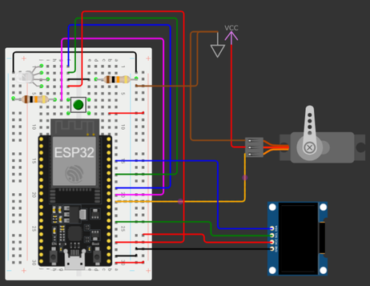
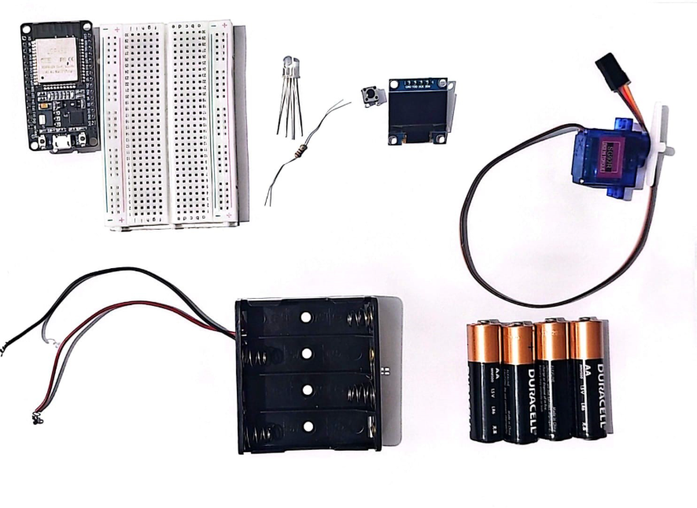
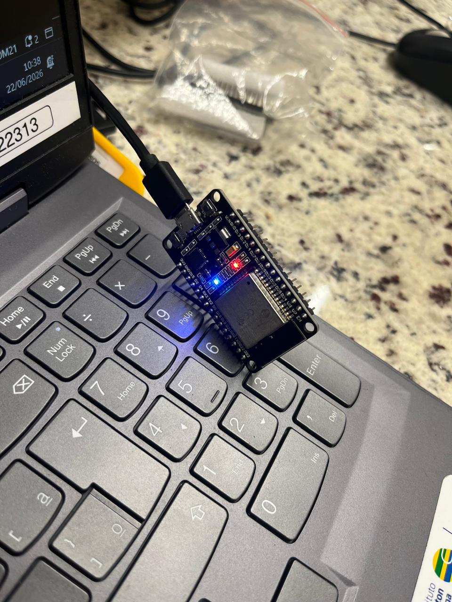
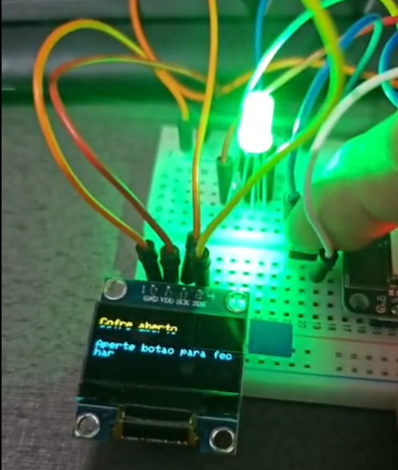

Cofre com ESP32 – Autenticação e Máquina de Estados
Nesta oficina, os estudantes construirão um cofre eletrônico funcional utilizando o microcontrolador ESP32, um display OLED, um LED RGB, um botão físico e um servo motor responsável por trancar e destravar uma caixa de papelão.
Mais do que montar o circuito, o desafio central está na programação de uma máquina de estados. O cofre precisa identificar em que situação se encontra (“Travado”, “Digitando”, “Liberado” ou “Bloqueado”) e decidir como agir a cada comando recebido.
A senha é enviada remotamente por meio da conexão Bluetooth do ESP32 e pareada a um computador via terminal serial. Esse processo envolve validação de dados, tratamento de strings, controle de tentativas e aplicação de tempos de bloqueio.
Ao final, os estudantes terão desenvolvido um sistema embarcado completo e refletido sobre segurança digital, vulnerabilidades de autenticação e limites da automação no cotidiano.
Estrutura da Oficina
Materiais
Lista de materiais/softwares/componentes necessários
Preparar
45 minApresentação
Nesta oficina, os estudantes serão desafiados a atuar como projetistas de sistemas embarcados e construirão um cofre eletrônico funcional cujo comportamento é inteiramente definido por código. Diferentemente de circuitos que apenas reagem de forma direta a um estímulo – como uma luz que acende quando um botão é pressionado —, a programação de uma máquina de estados permite ao sistema “lembrar” em que situação se encontra e decidir como agir. Assim, a mesma ação pode produzir resultados distintos conforme o estado atual do cofre: iniciar a digitação da senha, validá-la, liberar o acesso ou ignorar o comando.
O projeto utiliza o microcontrolador ESP32 para controlar um display OLED, bem como um LED RGB, um botão físico e um servo motor que tranca e destranca uma caixa de papelão construída pelos próprios estudantes. A senha pode ser enviada via Bluetooth (por meio de um computador pareado com a placa) ou pelo Monitor Serial da Arduino IDE, dependendo da configuração escolhida. O sistema valida a senha recebida, gerencia tentativas erradas e aplica um bloqueio temporário após 3 falhas consecutivas.
Objetivo da oficina: construção de um cofre eletrônico funcional utilizando ESP32, componentes eletrônicos e programação baseada em máquina de estados, com ênfase na compreensão de sistemas de autenticação e segurança digital.
A complexidade do projeto pode ser adaptada conforme o nível da turma e o tempo disponível. O educador pode optar por desenvolver o cofre completo (com display OLED, servo motor, LED RGB e conectividade Bluetooth) ou simplificar a montagem, mantendo apenas LED e botão com inserção da senha pelo Monitor Serial, sem necessidade de alterar o código principal. A expansão pode ocorrer de forma progressiva: primeiro o servo motor, depois a conectividade Bluetooth e, por fim, o display OLED.
Etapas da atividade: a oficina será desenvolvida em etapas progressivas: primeiro a configuração do ambiente de programação para o ESP32; depois a montagem do circuito conforme o nível escolhido; em seguida, o carregamento do código e os testes de comunicação (via Serial ou Bluetooth); e, por fim, a reflexão sobre as vulnerabilidades de segurança do sistema construído e sobre as possibilidades de aprimoramento.
Além disso, a oficina está alinhada com competências da BNCC da Computação, como o pensamento científico, crítico e criativo (ao testar diferentes configurações e refletir sobre falhas de segurança), a cultura digital (ao utilizar comunicação Bluetooth e sistemas embarcados), a ética e cidadania (ao discutir vulnerabilidades e responsabilidade no uso de sistemas de autenticação) e o trabalho colaborativo (ao compartilhar descobertas e soluções entre os grupos).

helpPerguntas reflexivas
- Vocês já usaram alguma senha, PIN ou padrão de desbloqueio hoje? O que acontece "por trás" do sistema quando digita-se um código errado?
- Por que um cofre que apenas compara a senha digitada com a senha correta ainda não é seguro o suficiente?
- Se vocês pudessem dar ao cofre uma "decisão inteligente" que ele não tem hoje, qual seria e por quê?
O componente central desta oficina é o ESP32, uma placa microcontroladora de baixo custo com Bluetooth e Wi‑Fi integrados, amplamente utilizada em projetos de internet das coisas (IoT). Diferentemente do Arduino Uno, que opera com 5 V e não possui conectividade nativa, o ESP32 trabalha com 3,3 V e já incorpora recursos de comunicação sem fio. Isso o torna ideal para projetos que exigem troca de dados entre dispositivos, como o envio remoto de uma senha para o cofre via Bluetooth.
Outro elemento essencial é a máquina de estados conceito fundamental da computação que organiza o comportamento de um sistema em estados bem definidos. No cofre, definimos 4 estados principais:
- Travado: aguardando o recebimento de uma senha.
- Digitando: o usuário está enviando os caracteres da senha.
- Liberado: senha correta, cofre aberto.
- Bloqueado: 3 tentativas erradas, sistema temporariamente inativo.
Essa organização permite ao sistema “lembrar” sua condição atual e determinar como agir a cada novo comando recebido. A implementação dessa lógica representa o núcleo do Pensamento Computacional na atividade.
Outros periféricos importantes
- Display OLED 0,96" I2C: exibe mensagens ao usuário ("Aguardando senha", "Acesso liberado", "Bloqueado"). Comunica-se com o ESP32 via I2C (2 fios: SDA e SCL).
- LED RGB: fornece feedback visual imediato. Azul para “Aguardando”, amarelo (verde+azul) para “Digitando”, verde para “Liberado”, vermelho para “Bloqueado”.
- Servo motor MG90S: gira um braço físico para travar e destravar a tampa do cofre. Requer alimentação externa de 5 V (pilhas), pois o ESP32 fornece apenas 3,3 V.
- Botão (Push Button): possibilita fechar o cofre manualmente após a liberação (acionado pelo usuário).

tips_and_updatesDicas de condução
Preparação da placa ESP32
Para possibilitar a utilização da placa ESP32, alguns passos prévios são necessários, a fim de estabelecer comunicação com a placa.
Embarque
Antes de iniciar a montagem do cofre, é fundamental que os estudantes confirmem que a comunicação com o computador está funcionando. Isso é essencial para reduzir frustrações nas etapas seguintes.
A configuração inicial do ESP32, que envolve a instalação de drivers, a adição das placas no gerenciador da Arduino IDE e a instalação das bibliotecas necessárias, é um procedimento que, embora simples, exige atenção. O conteúdo "Preparação da placa ESP32", disponível na “Preparação”, guia todo esse processo passo a passo, garantindo que as placas estejam prontas para uso antes do início da oficina. Recomenda-se ao educador que realize essa preparação previamente em pelo menos um computador para ter um modelo de referência e agilizar o suporte aos grupos durante a aula. Com essa etapa já resolvida, os estudantes podem conectar a placa e focar diretamente a atividade proposta, sem perder tempo com configurações extensas.
Durante este Embarque, os estudantes devem carregar um código simples de Blink no ESP32 para verificar se a placa está funcionando, se a conexão está estabelecida e se o ambiente de programação está configurado corretamente.
Contexto para os estudantes
Caso os estudantes já conheçam o Arduino ou o micro:bit, explique que o ESP32 também é uma placa programável, mas com recursos adicionais. Ao contrário do Arduino Uno (5 V e sem conectividade nativa) ou do micro:bit (com sensores e Bluetooth integrados), o ESP32 opera em 3,3 V e possui Bluetooth e Wi-Fi incorporados, o que permite comunicação sem fio com outros dispositivos. Nesta atividade, essa conectividade será utilizada para enviar a senha do cofre via Bluetooth, dispensando teclados físicos.
Antes de montar o circuito completo, será feito um teste de aquecimento: carregar um programa simples (Blink) para garantir que todos os grupos partam de uma base funcional.
Preparação do educador
- Verifique se a Arduino IDE e os drivers USB (CP2102 ou CH340) estão instalados nos computadores que serão utilizados. Para muitos computadores, esse passo não será necessário; porém, o processo de instalação prévia garante que não haja incompatibilidade no momento de sala de aula.
- Confirme que a Arduino IDE está configurada com as placas ESP32 (link do gerenciador: https://espressif.github.io/arduino-esp32/package_esp32_index.json)
- Tenha o código de teste (Blink) disponível para os estudantes copiarem e colarem.
Primeiro upload: o que esperar do ESP32
O primeiro upload pode ser mais demorado que no Arduino. É normal aparecerem mensagens como "Connecting…" ou "Uploading…". O processo pode levar de 10 a 30 segundos.
Se surgir a mensagem "Failed to connect to ESP32", a placa pode não ter entrado automaticamente no modo de gravação. Nesse caso, peça aos estudantes que mantenham pressionado o botão “BOOT” durante o upload e soltem-no quando aparecer "Connecting...". Caso o erro persista, verifique a porta selecionada e se o cabo USB transmite dados.
Durante a aula (com os estudantes
- Instalação e configuração: se necessário, os estudantes devem instalar os drivers e configurar a IDE com apoio do educador.
- Conexão e
teste: os
estudantes devem conectar o ESP32, selecionar "ESP32 Dev Module" e a porta
correta e, por fim, carregar o código Blink. O LED interno (GPIO 2) deve piscar a
cada 1 segundo.

Engenharia reversa (reflexão sobre o código, 5 minutos):
Após o teste do Blink, conduza uma breve leitura comentada do código com a turma. As perguntas a seguir podem ser projetadas ou lidas, e as respostas esperadas servem como guia para o educador validar a compreensão dos estudantes.
- O que significa pinMode(2, OUTPUT)?
- Para que servem os comandos “digitalWrite(HIGH)” e “digitalWrite(LOW)”?
- O que aconteceria se trocássemos o valor de 1000 para 500 no delay?
- Por que o LED interno do ESP32 usa o pino 2?
- O que acontece se você esquecer de colocar o pinMode(2, OUTPUT) no setup?
Este momento ajuda a conectar a experiência com a placa à programação que será feita no cofre.
Criar
90 minProtótipo
Cofre com ESP32: Montagem, Configurações e Testes

Estrutura sugerida da construção
Etapa 1 - Montagem do circuito
- Montagem do circuito
- Realizando as conexões
- Display OLED (opcional)
- LED RGB ou 3 LEDs difusos (obrigatório) (escolha conforme a disponibilidade)
- Push Button (obrigatório)
- Servo motor (opcional)
- Verificação e registro
- Construção da caixa do cofre (opcional)
Etapa 2 - Configuração e testes
- Upload do código para o ESP32
- Pareamento Bluetooth e teste inicial
- Comunicação com o ESP32 – Monitor Serial e App Dabble
- Investigação do código (engenharia reversa)
- Desafios de modificação
tips_and_updatesDicas de condução
Refletir
45 minAprendizados
Dinâmica de compartilhamento: Feira de cofres
Organize um momento para que os grupos compartilhem suas experiências e descobertas. Como cada grupo pode ter personalizado diferentes aspectos do cofre (nome Bluetooth, senha, tempo de bloqueio, mensagens do display), a troca de resultados enriquece a turma toda. A dinâmica será organizada em estilo de feira, em que os grupos permanecem com seus projetos e os colegas circulam para conhecer as criações.
Sugestão de organização
helpPerguntas reflexivas
- Qual foi a parte mais desafiadora da montagem ou programação? Como seu grupo resolveu os problemas que apareceram?
- O que acontece se o cofre não tiver um limite de tentativas erradas? Como isso poderia ser explorado por alguém mal-intencionado?
- Se você fosse projetar um cofre real para uma empresa, que outros cuidados (além da senha e do bloqueio) você precisaria ter?
- O que acontece se alguém descobrir a senha fixa que está no código? Como tornar o sistema mais seguro?
- Qual é a diferença entre um sistema que só reage a um estímulo (como um LED que acende ao apertar um botão) e um sistema que “lembra” em que estado está e age conforme a situação?
Para ir além
30 minPara os estudantes que desejarem aprofundar o projeto, proponha caminhos de evolução do cofre ou a criação de novos sistemas com base nos conhecimentos apreendidos nesta oficina. Caso nem todas as etapas tenham sido concluídas em aula, esta também é uma oportunidade para aplicar melhorias como bloqueio progressivo ou registro de tentativas.
helpPerguntas reflexivas
- Como seu grupo poderia modificar o código para que, a cada erro, o tempo de bloqueio aumente progressivamente (ex.: 10, 30, 60 segundos)?
- Como se poderia registrar em um log (memória do ESP32) todas as tentativas de abertura, com data e hora?
- Que outros projetos você poderia criar usando os mesmos componentes (ESP32, OLED, LED RGB, servo, botão)? (Por exemplo: um sistema de alarme, um controlador de acesso ou uma fechadura eletrônica com diferentes níveis de permissão.)
- Se o cofre fosse controlado pelo celular em vez do computador, como seria feito? Que aplicativo poderia ser utilizado?
- Pensando em impacto social, em que outros lugares sistemas de autenticação e segurança poderiam melhorar o dia a dia das pessoas?
Incentive o registro, no Diário de Bordo, de ao menos uma ideia de projeto futuro baseada na oficina.